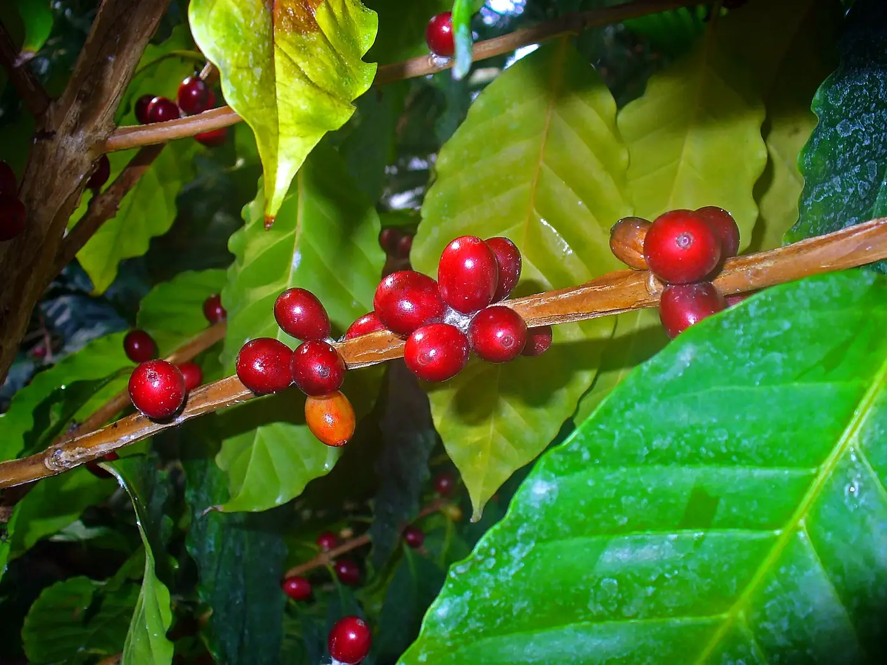
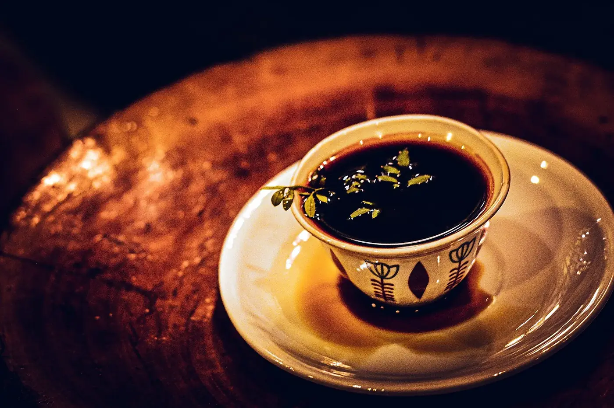
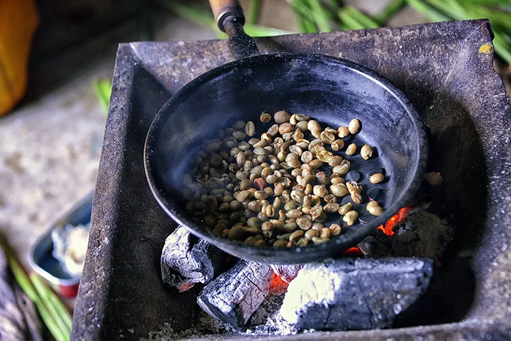
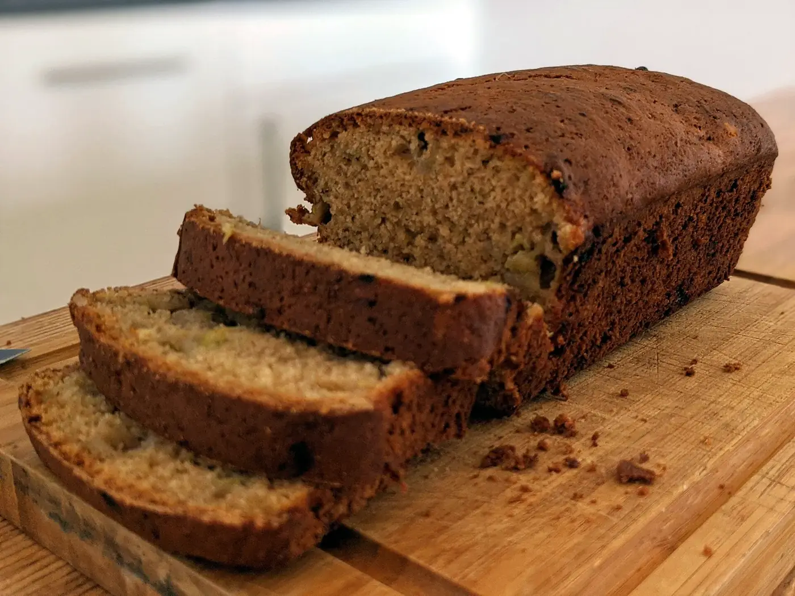
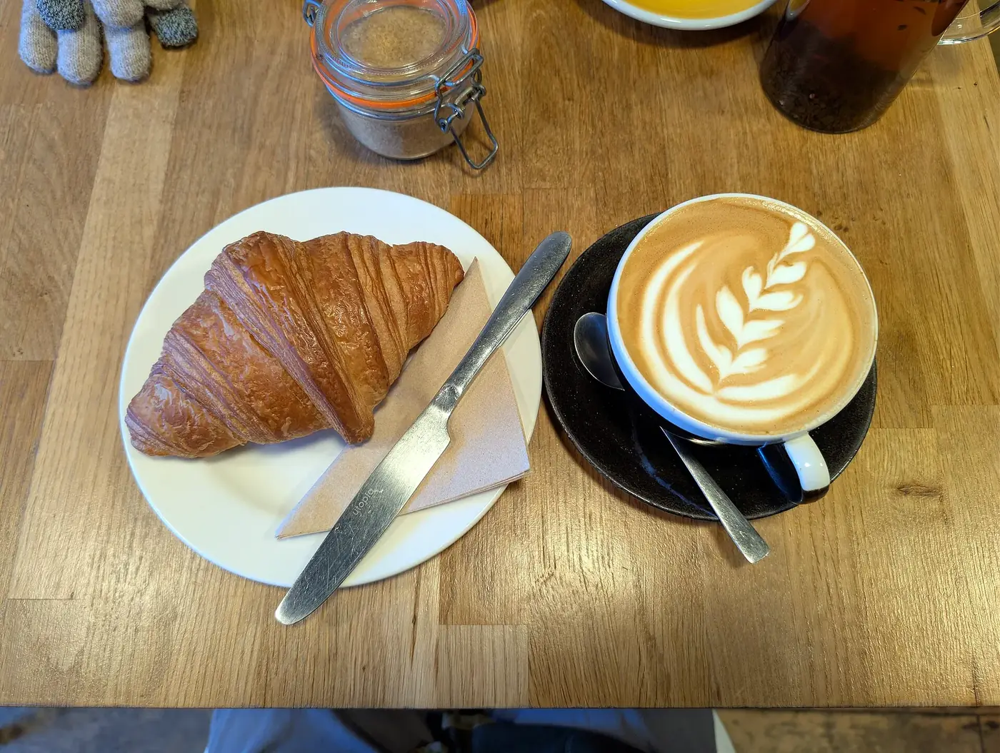
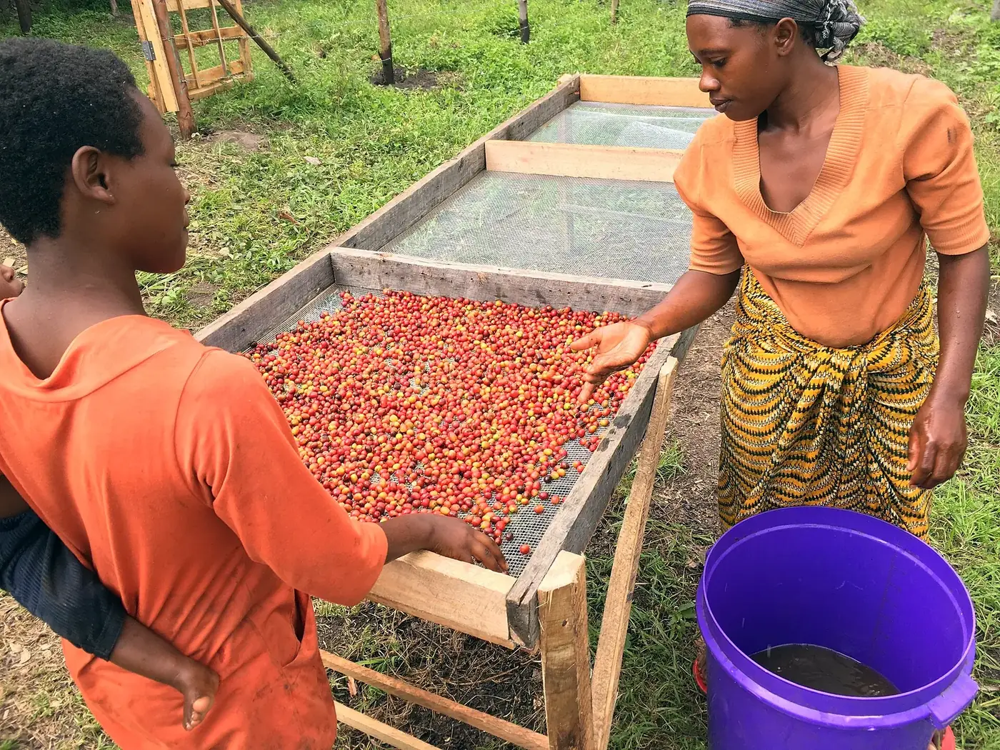
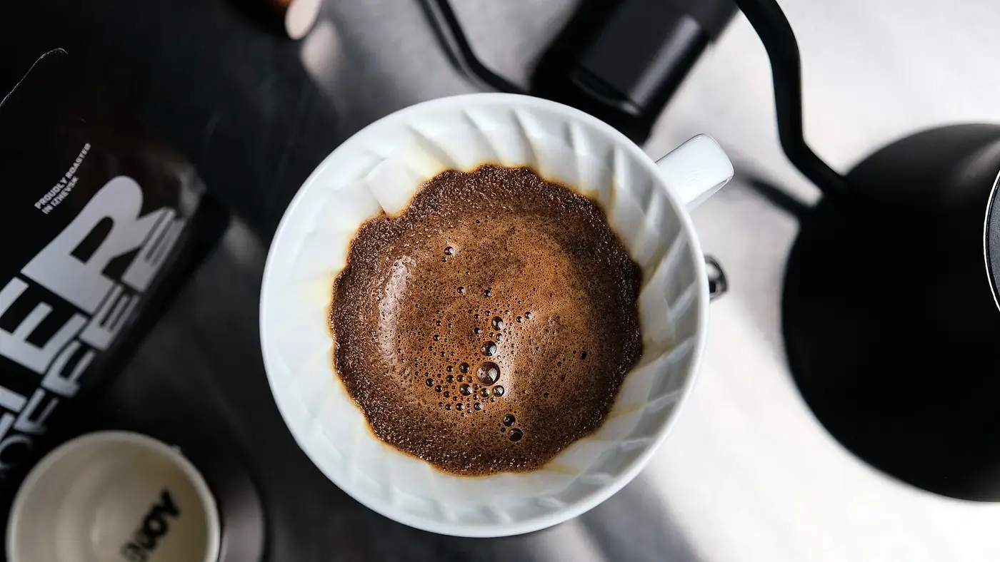
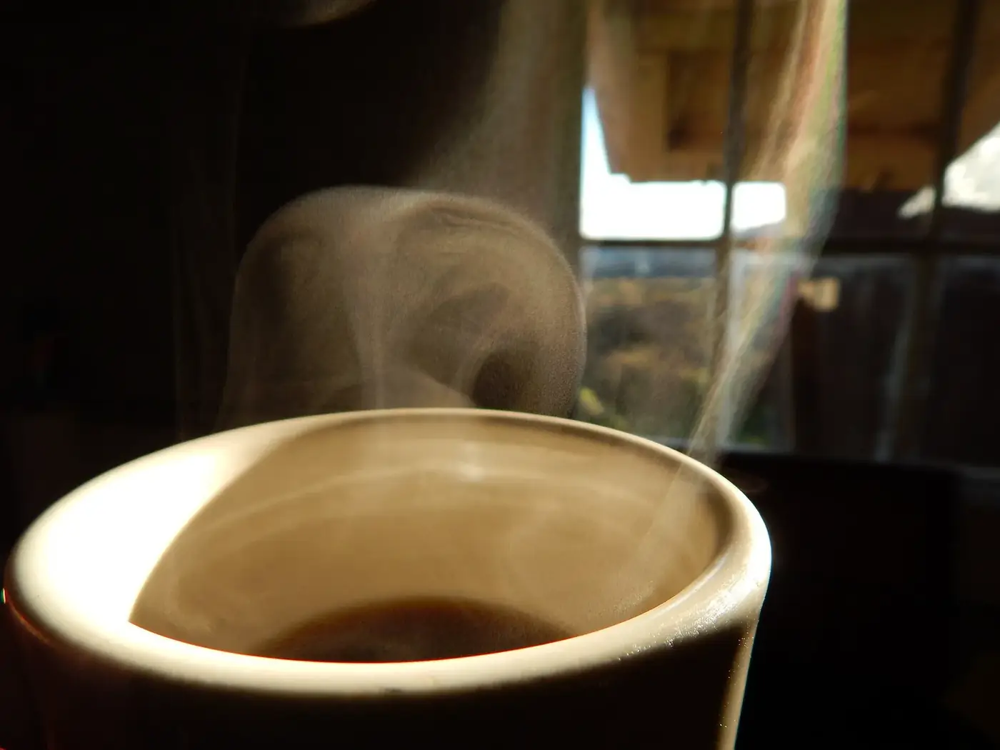
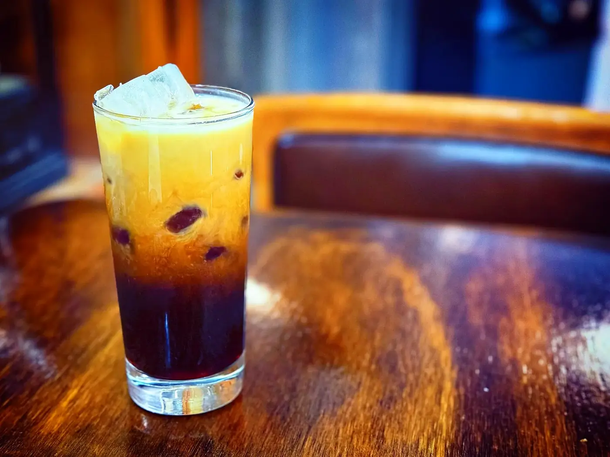

origins. From Ethiopia to Colombia, each one with its own taste.

Roast & Ritual
origins. coffees. vegetarian snacks.

origins. From Ethiopia to Colombia, each one with its own taste.

Roasted with care. Light, medium or dark: time and heat decide the taste.

All vegetarian. Not one recipe uses egg. Tawa, kadhai, oven or microwave.

Perfect pairs. A coffee and a bite that belong together.


Cherry
Coffee is the seed of a cherry. The cherries ripen from green to deep red, and only the ripe ones are picked by hand. One tree gives roughly half a kilo to a kilo of roasted coffee a year.
Process
The seeds are separated from the fruit. Natural coffee dries whole in the sun for weeks and turns sweet and fruity. Washed coffee has the fruit removed in water and tastes clean and bright.
Roast
Green beans are roasted in a drum, or in a pan over coals as in Ethiopia, between about 180 and 240 °C. Around 196 °C the first crack sounds like popcorn. Time and heat decide light, medium or dark.
Brew
Fresh grinding, water at 90 to 96 °C and a little patience. Hot water pulls the oils and sugars out of the grounds, and the first sip completes the ritual.
Kaffa, Ethiopia
Legend says a goat herder named Kaldi saw his goats dancing after eating red cherries. Monks brewed the first cup. In Ethiopia, coffee is still a ceremony: roasted in front of you, brewed in a clay jebena, and shared in three rounds.
ቡና Buna, the Amharic word for coffee.
Drag to turn the globe

Start with what is in your kitchen. No machine? You can still make a great cup.
recipes

Jar shakes, whipped foam and slow cold brew. Most need nothing more than a glass.
recipes
Simple, vegetarian and egg-free. Tawa and kadhai, or oven and microwave.
recipes
A coffee and a bite that belong together. Open one to see both recipes.
pairs
Scroll to build the moleculeC8H10N4O2